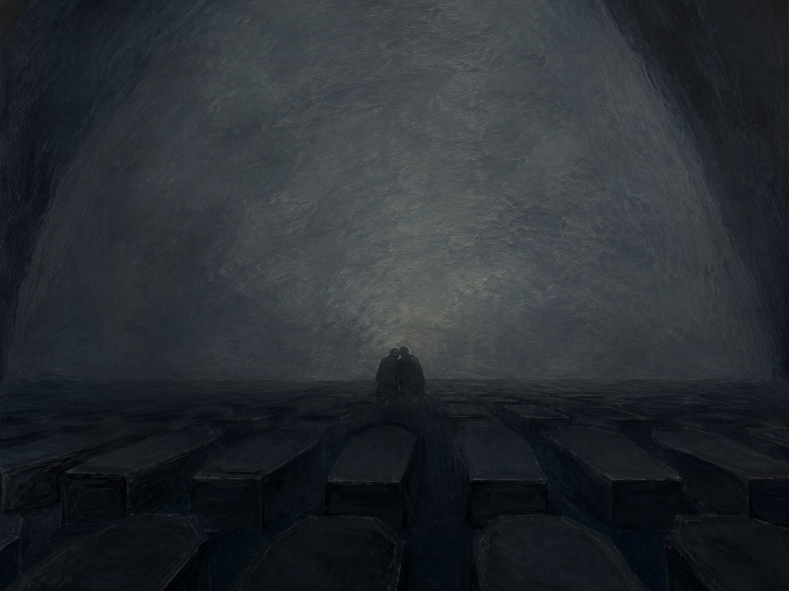

Es ist ein Weinen in der Welt,
★首行即与本站另一首同名诗分道：雅各布·范·霍迪斯《世界末日》（编号33）开篇是「市民尖顶脑袋上的帽子飞走了」——具体、可笑、外在；本诗开篇是一阵没有主体的哭声——抽象、内在、无从定位。Es ist … 是无人称结构，哭的人是谁不说；「哭泣」是全诗四个动作中的第一个（第1行）。⚠本站另收有雅各布·范·霍迪斯的同名诗《世界末日》（编号33），那是另一位作者的另一首作品，不是本诗的异文。
世界之终
《Gesammelte Gedichte》（1917）· 1917年版在标题下附题献「(H. W. Wilhelm von Kevlaar zur Erinnerung an viele Jahre)」
表现主义前期 · Frühexpressionismus
所据版本为《Gesammelte Gedichte》（Verlag der Weißen Bücher, Leipzig 1917），S. 100；成诗与首刊年份见校对记录

图片由 AI 生成
Es ist ein Weinen in der Welt,
★首行即与本站另一首同名诗分道：雅各布·范·霍迪斯《世界末日》（编号33）开篇是「市民尖顶脑袋上的帽子飞走了」——具体、可笑、外在；本诗开篇是一阵没有主体的哭声——抽象、内在、无从定位。Es ist … 是无人称结构，哭的人是谁不说；「哭泣」是全诗四个动作中的第一个（第1行）。⚠本站另收有雅各布·范·霍迪斯的同名诗《世界末日》（编号33），那是另一位作者的另一首作品，不是本诗的异文。
Als ob der liebe Gott gestorben wär,
★本页最重要的语法点：als ob 引导非真实比较从句，从句动词必须用虚拟式——gestorben wär(e) 是第二虚拟式的完成形。用 wär 而非 wäre 是省音（Apokope），为凑音节与韵脚。der liebe Gott 是口语中带亲昵意味的说法（「亲爱的上帝」），与「死了」并置，落差极大：不是神学命题（上帝已死），而是一个孩子式的说法被用来说一件无法承受的事。
Und der bleierne Schatten, der niederfällt,
der bleierne Schatten（铅灰色的／铅一般沉重的阴影）后面跟一个关系从句 der niederfällt（它降落下来），关系代词 der 与先行词同为阳性单数第一格。注意本行只是主语部分，谓语要到下一行才出现——句子被刻意悬在这里。
Lastet grabeschwer.
谓语 Lastet（压着、沉甸甸地压下来）迟到一行才落地，这一延迟本身就是「压」的语感。grabeschwer 是诗人自造的复合词（Grab 墓 + schwer 重），标准词典中查不到——★不可当作可套用的词汇。它同时也是本节的韵脚：与第2行的 wär 押韵，但 wär /-ɛːɐ̯/ 与 -schwer /-eːɐ̯/ 元音长短与音质都不完全相同，属不纯韵，本站已用 rhyme_groups 显式声明这一组。 ★本诗整体押韵不规则：三节分别为 abab（第1—4行）／aba（第5—7行）／aba（第8—10行），无统一韵式。
Komm, wir wollen uns näher verbergen …
四个动作中的第二个：「藏起来」（第5行）。Komm 是命令式；wir wollen + 不定式在此不是「我们想要」，而是劝诱式（「让我们……吧」），相当于英语 let's。verbergen（藏匿）是强变化动词，与本站《梦中之吻》（编号55）第12行的 birg dich 同词根，可对照。省略号是原版所有，表示话没有说完。
Das Leben liegt in aller Herzen
aller Herzen 是第三格复数（in + 三格）：「在所有人的心里」。★本行的 Herzen 是全诗唯一不入韵的一行——韵式校验会就此发出「孤字母」提示，本站已逐条确认：这不是漏数，它确实是一个孤韵行（Waise），夹在 verbergen / Särgen 这一对韵之间。
Wie in Särgen.
补足上一行的比喻：生命躺在心里，像躺在棺材里。der Sarg（棺材）复数 die Särge，此处第三格复数 Särgen。整节由「藏起来」推进到「棺材」——藏身之处与埋葬之处成了同一个地方。
Du! wir wollen uns tief küssen –
四个动作中的第三个：「亲吻」（第8行）。单独一个 Du! 作呼语，是拉斯克-许勒的标志性写法——不给名字，只给一个第二人称。wir wollen 又一次是劝诱式。破折号与上一节的省略号一样，把话留在半空。
Es pocht eine Sehnsucht an die Welt,
pochen an + 四格 = 「叩击、敲打（门等）」。渴望（Sehnsucht）被写成一个在门外敲门的东西，而被敲的门是「世界」。Es 在此是形式主语，真主语是 eine Sehnsucht——与第1行的 Es ist ein Weinen 是同一种句式，首尾呼应。
An der wir sterben müssen.
四个动作中的第四个，也是终点：「死」（第10行）。An der 是介词 + 关系代词，先行词是上一行的 eine Sehnsucht（阴性），介词 an 由 sterben an etwas（死于某物）这一搭配决定。★全诗的动作序列由此完成：哭泣（第1行）→ 藏起来（第5行）→ 亲吻（第8行）→ 死（第10行）。让人死的不是灾难，是渴望本身。
| Infinitiv | Präsens 3. Sg. |
Präteritum | Perfekt | Partizip II | Konjunktiv II | Hilfsverb |
|---|---|---|---|---|---|---|
| verbergen | verbirgt | verbarg | hat verborgen | verborgen | verbärge | haben |
| ↳ 强变化（e–a–o），不可分前缀。诗中第5行作不定式。现在时单数第二、三人称换音 e→i：du verbirgst, er verbirgt。前缀 ver- 不可分，故第二分词不加 ge-：verborgen（不是 *geverborgen）。 | ||||||
| sterben | stirbt | starb | ist gestorben | gestorben | stürbe | sein |
| ↳ 强变化（e–a–o），助动词 sein。诗中第2行作第二虚拟式完成形 gestorben wär(e)，第10行作不定式（sterben müssen）。搭配 an etwas sterben（死于某物）——第10行的介词 an 由此而来。 | ||||||
| sein | ist | war | ist gewesen | gewesen | wäre | sein |
| ↳ 不规则；第二虚拟式 wäre。诗中第2行 gestorben wär 是省音形（wäre → wär）。als ob 从句必须用虚拟式，这是本页最该记住的一条。 | ||||||
Es ist ein Weinen in der Welt …（本诗） / Dem Bürger fliegt vom spitzen Kopf der Hut …（编号33）
Als ob der liebe Gott gestorben wär
wir wollen uns näher verbergen … wir wollen uns tief küssen
埃尔莎·拉斯克-许勒（1869—1945）是德语表现主义最重要的女性诗人。她活跃于柏林的《Der Sturm》圈子——该刊由她的第二任丈夫赫尔瓦特·瓦尔登创办，刊名据说也出自她的建议（此说待进一步核实）。本站另收有她的《一条古老的西藏地毯》（编号38）。1933年后她流亡瑞士，1939年起定居耶路撒冷，1945年1月在那里去世。
⚠本页最需要注意的一件事：本站收有**两首**题为《Weltende》的诗——本诗（拉斯克-许勒）与编号33的范·霍迪斯《世界末日》。两者是不同作者的不同作品，不是异文，也不是重复收录。本站固定以《世界之终》指本诗、以《世界末日》指编号33，两页的页眉、注释与目录均按这一对称呼书写。
德语诗中同名作品极多（《Herbst》《Abendlied》《An die Nacht》都有大量同名之作），本站已把「同名作品的处理规范」写入编辑流程文档，本页是该规范的第一个适用对象。
本诗的语气与范·霍迪斯那首几乎相反。范·霍迪斯用一串滑稽的事故拼出末日，读者会笑；本诗则把末日写成一场内向的哀恸——世界上有一阵没有主体的哭声，生命像躺在棺材里，说话人对一个不具名的「你」两度发出邀约，而终点是死。它更接近哀歌（Klage）而非讽刺，宗教语汇（der liebe Gott、Sarg、Sehnsucht）贯穿始终，却没有任何教义内容。
★关于本诗的成诗与首刊年份：常见说法称它收入1905年的诗集《Der siebente Tag》。本次核查所能确证的只有1917年《Gesammelte Gedichte》（Verlag der Weißen Bücher, Leipzig）S.100 这一版。因此本页**不就本诗与范·霍迪斯同名诗（1911年1月）的先后作任何断言**——两页都不作此断言，待回核到可靠的首刊出处后再补。
中文译文为本站学习译文（AI 辅助），采用直译。说明：(1) 标题固定译作《世界之终》，以与本站编号33 范·霍迪斯《世界末日》相区别，全站互指一律使用这一对称呼；(2) 正文照录1917年《Gesammelte Gedichte》S.100 的读法，包括省音形 wär 与自造复合词 grabeschwer，不作规范化改写；(3) grabeschwer 在逐行注释中标「诗人自造，不可套用」，Wortschatz 不收该词；(4) 1917年版在标题下另有题献「(H. W. Wilhelm von Kevlaar zur Erinnerung an viele Jahre)」，本站正文不含该行，已在 collection 与校对记录中著录；(5) 第5、8行的 wir wollen 译作「我们……吧」以体现劝诱式，不译成「我们想要」。
【★同名诗消歧（本页最高优先事项）】本站收有两首题为《Weltende》的诗：本诗（Else Lasker-Schüler，slug weltende-lasker-schueler，编号57）与雅各布·范·霍迪斯的同名诗（slug weltende，编号33，1911年1月11日《Der Demokrat》）。二者是不同作者的不同作品，非异文、非重复收录。已执行的四项措施：(1) 本页 slug 为 weltende-lasker-schueler，既有的 weltende 未被占用或改动；(2) 两页的页眉／首条逐行注释／grammar_notes／cultural_notes 均写有显式消歧说明，并经 cross_references 双向声明；(3) title_zh 作区分——编号33 维持《世界末日》，本页作《世界之终》，全站互指统一使用这一对称呼；(4) 目录页与站内搜索的可见性已作浏览器实测，结果见交付说明。
【三源核对】正文以 Wikisource 所据《Gesammelte Gedichte》（Verlag der Weißen Bücher, Leipzig 1917）S.100 为一级来源（校对状态 fertig，附原书扫描）。另有 deutschelyrik.de（二级）与 gedichte7.de（三级，Possel 运营方）。10 行，分节 4/3/3——三源一致。
【韵式逐行数出】abab cdc eae（全诗连续编号）。逐行末词：1 Welt／2 wär／3 niederfällt／4 grabeschwer／5 verbergen／6 Herzen／7 Särgen／8 küssen／9 Welt／10 müssen。注意第9行的 Welt 与第1行同词同韵，故仍标 a。
【★孤字母 WARN 已逐条确认】韵式校验就字母 d 发出「只出现一次」的提示。已回核：第6行 Herzen 确实不与任何一行押韵，是一个孤韵行（Waise），夹在 verbergen（第5行）／Särgen（第7行）这一对韵之间。非漏数、非误报，确认放行，并已在该行的逐行注释中写明。
【不纯韵已显式声明】第2行 wär 与第4行 grabeschwer 押韵，但二者元音长短与音质不同（/-ɛːɐ̯/ vs /-eːɐ̯/），且自动聚类会把重读的 -schwer 误判为弱读词尾，故已用 rhyme_groups [[2,4]] 显式声明为一组。
【★不作时间先后断言】常见说法称本诗收入1905年诗集《Der siebente Tag》，本次未能证实；所能确证的只有1917年《Gesammelte Gedichte》S.100。因此本页与编号33 页面**均不就两首同名诗的先后作任何断言**，author_sort_year 取可证实的1917年。首刊出处待回核。
【句法要点】本诗不是罗列式句法（Reihungsstil）。十行中含 als ob 从句（第2行）、关系从句（第3行）、介词+关系代词从句（第10行），是层层从属的复合句，且主语与谓语被拆到第3—4两行。这一差异已在 grammar_notes 中与编号33 的罗列式句法逐点对照，避免读者把「表现主义」等同于单一句法。
【自造词处理】grabeschwer（第4行）为诗人自造复合词，Wortschatz 不收，已在逐行注释中标「诗人自造，不可套用」（同《巡逻》编号45 对 feinden / raschlig 的处理原则）。
【动作序列（附行号）】哭泣（第1行）→ 藏起来（第5行）→ 亲吻（第8行）→ 死（第10行），已在逐行注释中逐个标注。
【题献行】1917年版标题下有「(H. W. Wilhelm von Kevlaar zur Erinnerung an viele Jahre)」一行。本站正文不含该行（它不是诗行），已在 collection 与本记录中著录。该题献对象的身份待进一步核实。
【待进一步核实】(1) 本诗的成诗与首刊年份（《Der siebente Tag》1905 一说）；(2) 题献对象「H. W. Wilhelm von Kevlaar」的身份；(3)《Der Sturm》刊名出自拉斯克-许勒建议一说的出处。
【公版】拉斯克-许勒1945年卒，公版起始年 = 1945 + 71 = 2016。
本诗满足规则 A（≥3 来源）、B（≥3 独立运营方：wikimedia / deutschelyrik / possel）、D（含一级来源：1917年版扫描转录，标注页码 S.100）。